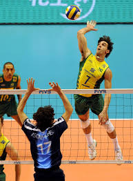
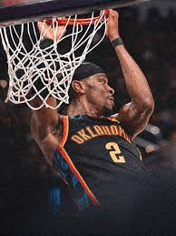

Volleyball

Volleyball is a team sport in which two teams of six players are separated by a net. Each team tries to score points by grounding a ball on the other team's court under organized rules. Volleyball was invented in 1895 by the American educator William G. Morgan, a YMCA physical education director in Holyoke, Massachusetts. Morgan intended the game, which he originally called “mintonette”, to be an alternative to basketball that was less physically demanding. Visit Website for more details...
Basketball

Players advance the ball by bouncing it while walking or running (dribbling) or by passing it to a teammate, both of which require considerable skill. On offense, players may use a variety of shots - the layup, the jump shot, or a dunk; on defense, they may steal the ball from a dribbler, intercept passes, or block shots; either offense or defense may collect a rebound, that is, a missed shot that bounces from rim or backboard. It is a violation to lift or drag one's pivot foot without dribbling the ball, to carry it, or to hold the ball with both hands then resume dribbling. Visit Website for more details...